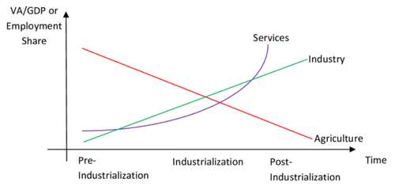
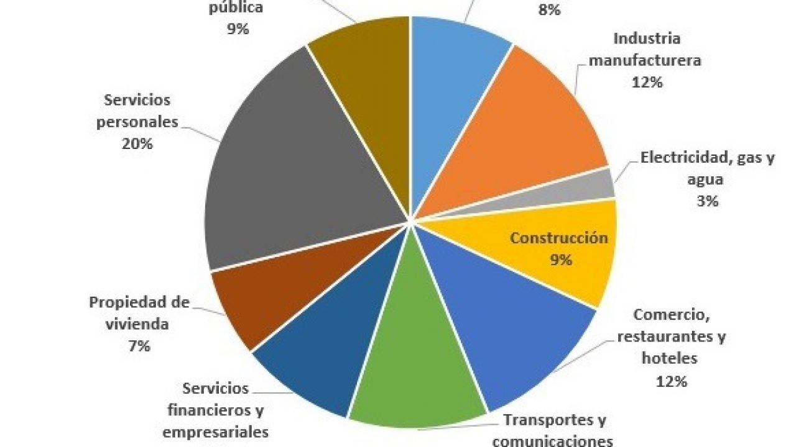

Con 360 millones de habitantes latinoamérica representa el 8,5% de la población mundial y cuenta con el 14.4% de recursos naturales en todo el mundo al mismo tiempo representa solo el 7,5% del pib mundial.
Su sector industrial a perdido importancia en contraste con otras regiones como el sudeste asiatico esto se debe en parte en poca inversion a su investigación y desarrollo pero también a factores históricos comunas que dificultan su desarrollo productivo como el patrón primario expotador y la desigualdad estructural la problemática ambiental complica. Aún más este escenario ya que la presión que los países latinoamericanos ejercen sobre sus recursos es mayor su capacidad regenerativa lo anterior demanda entonces tomar distancia de enfoques que busquen soluciones casi exclusivamente dentro de la órbita del mercado y de aquellos meramente desarrollistas que ignoran el impacto ambiental de las actividades económicas como repensar la transformación productiva de américa latiuna desde una perspectiva social y ecológica para responder esta pregunta. Es hiperactivo vincular tres ejes fundamentales la capacidad disruptiva de la innovación el fortalecimiento de los sectores con mayor demanda y capacidad de empleo la sostenibilidad ambiental

1. - La capacidad disruptiva de la innovación.
2. - El fortalecimiento de los sectores con mayor demanda y capacidad de empleo.
3. - la sostenibilidad ambiental y cuidado de la naturaleza.
lo primero sería trascender la lógica extractivista y sustituirla por otra donde la transformación coloque al centro del cuidado ambiental y a su alrededor la formación de clusters tecnológicos para regenerar recursos que ayuden a fomentar el empleo y a fortalecer a pequeños y medianos emprendedores y productores mejorar la agenda macroeconómica a través de los productos exportados de materias primas en tiempos de bonanza y emplear.
